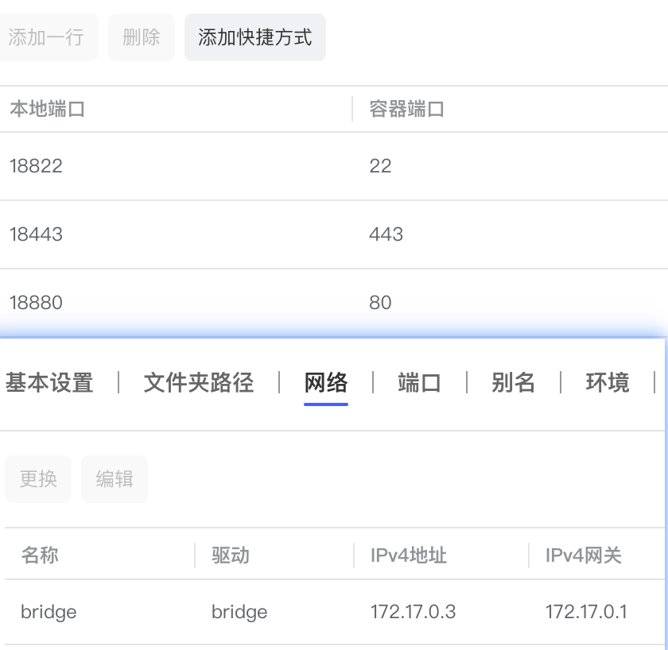

2024-03-09
nginx
修改于: 2024-03-09教程
mac下生成证书
参见 钥匙串访问与证书
遇到的报错
No route to host
完整信息:
2024/6/21 0:12:08 2024/06/20 16:12:08 [error] 22 #22: *1 connect() failed (113: No route to host) while connecting to upstream, client: 192.168.50.51, server: git.yq.io, request: "GET / HTTP/1.1", upstream: "http://192.168.50.223:18880/", host: "gitlab.yq.io"

在nginx所在机器上发现无法正常访问
root@gw:~# ping 192.168.50.223
PING 192.168.50.223 (192.168.50.223) 56(84) bytes of data.
From 192.168.50.100 icmp_seq=1 Destination Host Unreachable
From 192.168.50.100 icmp_seq=2 Destination Host Unreachable
From 192.168.50.100 icmp_seq=3 Destination Host Unreachable
^C
--- 192.168.50.223 ping statistics ---
6 packets transmitted, 0 received, +3 errors, 100% packet loss, time 5118ms
pipe 4
nginx是使用maclan桥接启动的docker, 192.168.50.223 是宿主机, 多半就是macvlan桥接与宿主机的访问问题了.
- macvlan模式
容器与宿主机通信
通俗一点讲就是在一张物理网卡上虚拟出两个虚拟网卡，具有不同的MAC地址， 可以让宿主机和docker同时接入网络并且使用不同的ip， 此时docker可以直接和同一网络下的其他设备直接通信， 相当的方便，但是这种模式有一个问题，宿主机和容器是没办法直接进行网络通信的
我的机子不方便直接设置网络, 只好将服务再启动在一个容器里了.
PEM_read_bio_X509_AUX
完整错误:
nginx: [emerg] cannot load certificate "/etc/nginx/ssl/xxx.pem": PEM_read_bio_X509_AUX() failed (SSL: error:0480006C:PEM routines::no start line:Expecting: TRUSTED CERTIFICATE)
说明文件给错了, 可以使用以下命令:
openssl x509 -text -noout -in xxx.crt
来确定是否是证书. 且要注意, nginx不接受加密后的证书文件(二进制文件), 若是二进制文件, 需要单独把证书跟密钥提取出来.
mac下证书导出可参考 钥匙串访问与证书